Browse through the above categories to view our favourite local spots in Barcelona - click the links to view map locations, and websites.
Eating Out
La Plata
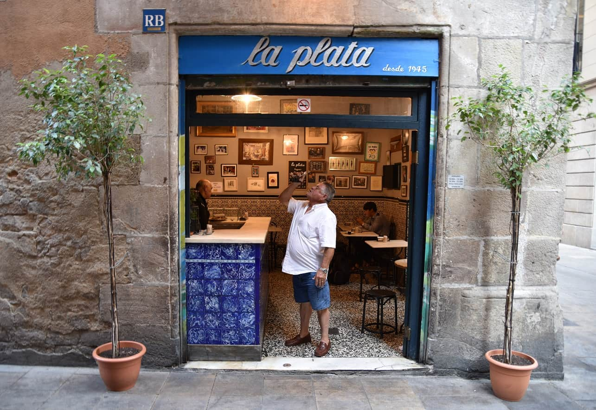
Tucked away in a narrow lane near the waterfront, La Plata is a humble but well-loved bodega that serves just four plates:pescadito frito (small fried fish), butifarra (sausage), anchovies and tomato salad. Add in the drinkable, affordable wines (per glass €1.20) and vermouth, and you have the makings of a fine predinner tapas spot.
Address:
Carrer de la Mercè, 28, 08002 Barcelona
Phone: +34 933 15 10 09
Hours: Monday – Saturday 9AM–3:30PM and 6:30–11PM. Closed on Sunday.
Website:
barlaplata.com
Tantarantana
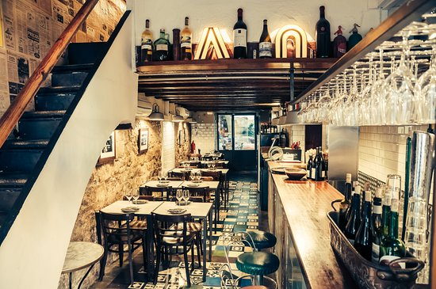
Mediterranean cuisine in dishes and dishes perfect for sharing in groups or couples. The rotation of seasonal products means that you can always find surprises, but success is assured with Eggplant with honey and lime, Grilled bluefin tuna or any of its desserts, such as the Lemon Pie of public scandal.
Address:
Carrer d'en Tantarantana, 24, 08003 Barcelona
Phone: +34 93 268 24 10
Hours: Daily 1PM-12AM.
Website:
gruposantelmo.com
Mercè Vins
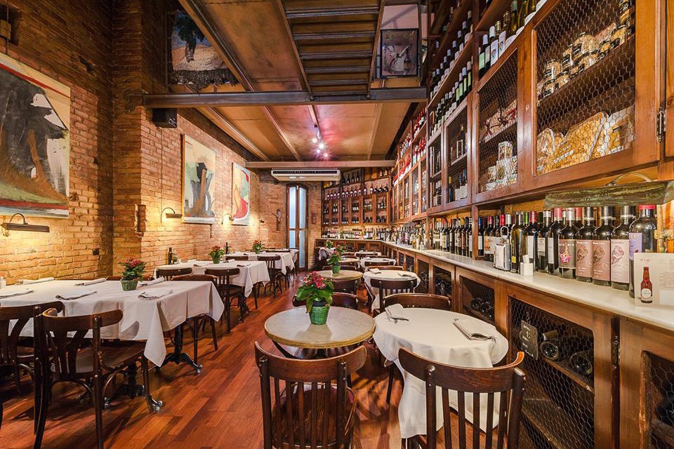
Set in the heart of the Barri Gòtic, this cosy, atmouspheric lunchtimes-only restaurant is aimed at office work- ers. Dishes on the menú del día change daily, but might include a pumpkin soup or inventive salad, followed by botifarra with sautéed garlic potatoes. Home-cooked, seasonal €13 menú del día changes daily.
Address:
Carrer de n'Amargós, 1, 08002 Barcelona
Phone: +34 933 02 60 56
Hours: Monday – Thursday 8AM–5PM. Friday 8AM-5PM and 9PM-12AM. Closed on Weekends.
Website:
mercevins.wordpress.com
Drinking Out
El Bar de l'Antic Teatre
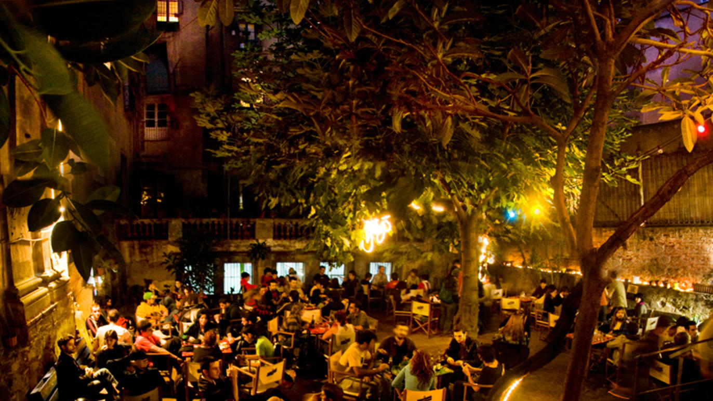
A hidden gem in El Born area - L'Antic Teatre is an old, recycled space, but has one of the best indoor terraces you’ll ever see. An enormous courtyard with vegetation dotted around haphazardly, ideal for kicking back with a beer or two and waiting for the show to begin. In between the Santa Caterina market and the Palau de la Música, in the very heart of the city, it has become a landmark venue for the neighbourhood with its unique garden and wealth of cultural and social history.
Address:
Carrer de Verdaguer i Callís, 12, 08003 Barcelona
Phone: +34 933 15 23 54
Hours: Daily 4PM-12AM.
Website:
barlaplata.com
Espai Mescladís
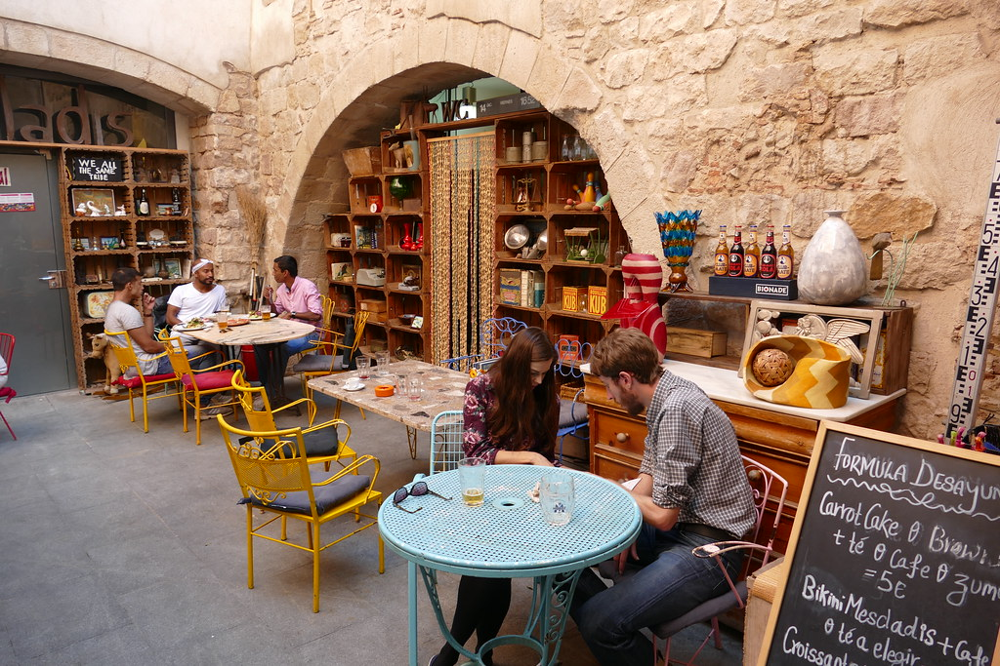
Located in a peaceful corner of Barcelona’s trendy El Born neighbourhood, at first sight Espai Mescladis could just be another hip café. However there’s a lot more to this cosy locale than its home cooking and colourful furniture. Espai Mescladis is the face of a not-for-profit organisation using food and drink as a way to foster social cohesion in the city.
Address:
Carrer d'en Tantarantana, 24, 08003 Barcelona
Phone: +34 93 268 24 10
Hours: Daily 1PM-12AM.
Website:
planeterra.org
Bormuth
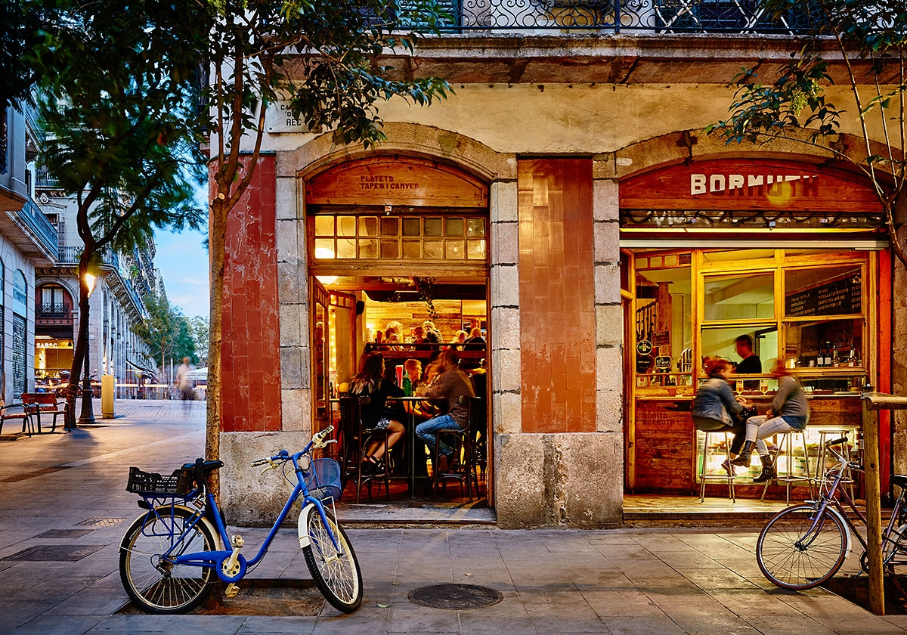
Bormuth is a popular tapas bar with traditional decor, clad in bare brick and recycled wood. It serves typical favourites from around Spain, including pimientos de Padrón (fried green peppers), buñelos de bacalao (cod fritters) and patatas mojo picón (Canary Island baked potatoes, smothered in a spicy sauce). Bormuth also specialises in homemade vermouth, which it has on tap.
Address:
Plaça Comercial, 1, 08003 Barcelona
Phone: +34 933 10 21 86
Hours: Sunday – Thursday 12:30PM–1:30AM. Friday - Saturday 12:30PM-2:30PM.
Website:
borthuth.blogspot.com
Activities
Bunkers Del Carmel
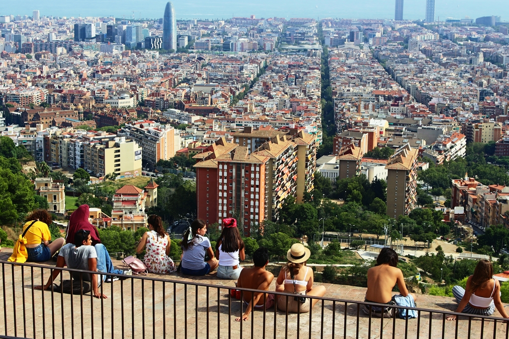
They might take some leg power to get to, but the Bunkers del Carmel offer the best view in the whole of Barcelona – a 360-degree vista with the city and all its iconic monuments on one side, and hills and the town of Sant Cugat on the other.A not-so-hidden gem - a popular spot to head up for sunset with drinks and snacks.
Address:
Carrer de Marià Labèrnia, s/n, 08032 Barcelona
Phone: N/A
Hours: 24hrs Daily.
Website:
bunkers.cat
Piscines Municipals Montjuïc

There's nowhere better to cool off or just hang out than this spectacular public pool, with panoramic views over Barcelona. you’ll find it high on Montjuïc hill, above the beautiful city of Barcelona. Best of all, it’s open to everyone, for the piddling price of around £4. Originally built in 1929, the pool came to international prominence when it hosted diving and water polo events at the 1992 summer Olympics.
Address:
Avinguda Miramar, 31, 08038 Barcelona
Phone: +34 9344 300 46
Hours: June-September. Daily 11AM-6:30PM.
Website:
guia.barcelona.cat
Casa Batlló
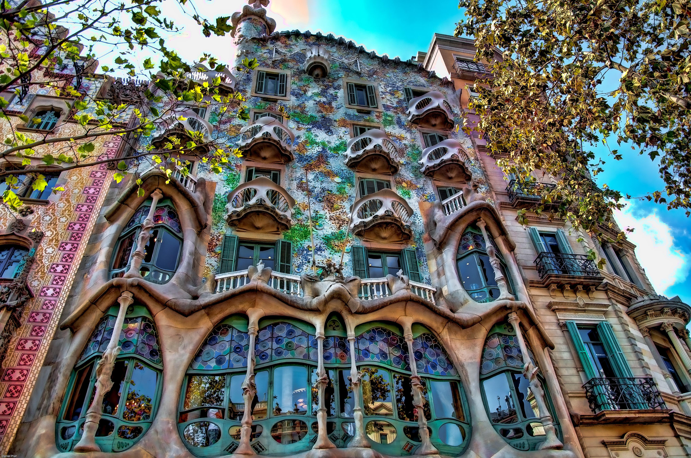
Casa Batlló is one of the most impressive and admired of all Gaudí's creations. Visits take you through the interior and up to the rooftop terrace. Deemed the crowning architectural work of Antoni Gaudí, Casa Batlló is a must-visit on anyone's trip to Barcelona.
Address:
Passeig de Gràcia, 43, 08007 Barcelona
Phone: +34 932 16 03 06
Hours: Daily 9AM-9PM.
Website:
casabatllo.es
Shopping
Mercat de Santa Caterina
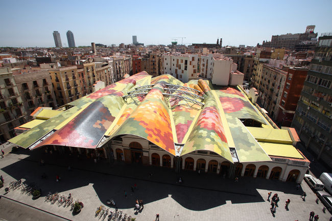
If you’re by the cathedral, you may catch glimpses of a curving, colourful roof across the busy Via Laietana. That’s the Santa Caterina Market, a must-visit for serious foodies. This market may not be as famous as the Boqueria, but that actually works in its favour – it’s not nearly as crowded. The market dates back to 1845, and it’s the first-ever covered food market in Barcelona. After the Spanish Civil War when there were food shortages, people from nearby towns took the tram to get here to find much-needed food supplies.
Address:
Av. de Francesc Cambó, 16, 08003 Barcelona
Phone: +34 933 19 57 40
Hours: Tuesday - Friday 7:30AM–8:30PM. Monday & Saturday 7:30AM-3:30PM. Closed on Sunday.
Website:
mercatsantacaterina.com
Mercado de La Boqueria
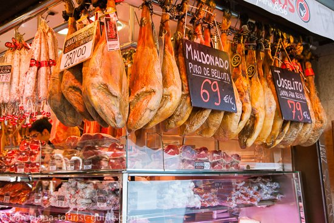
La Boqueria is a famous market located in El Raval with an entrance to the market from La Rambla. It provides a wide variety of fresh fruit, vegetables, nuts and seeds, sweets as well as meat, fish, cheese and dairy. However even if you're not looking to buy anything at the market it is well worth a visit in its own right just to soak up the atmosphere and the explosion of colours from the fresh fruits in the stalls.
Address:
La Rambla, 91, 08001 Barcelona
Phone: +34 933 18 25 84
Hours: Monday - Saturday 8AM-8:30PM. Closed on Sundays.
Website:
boqueria.barcelona
Palo Alto Market
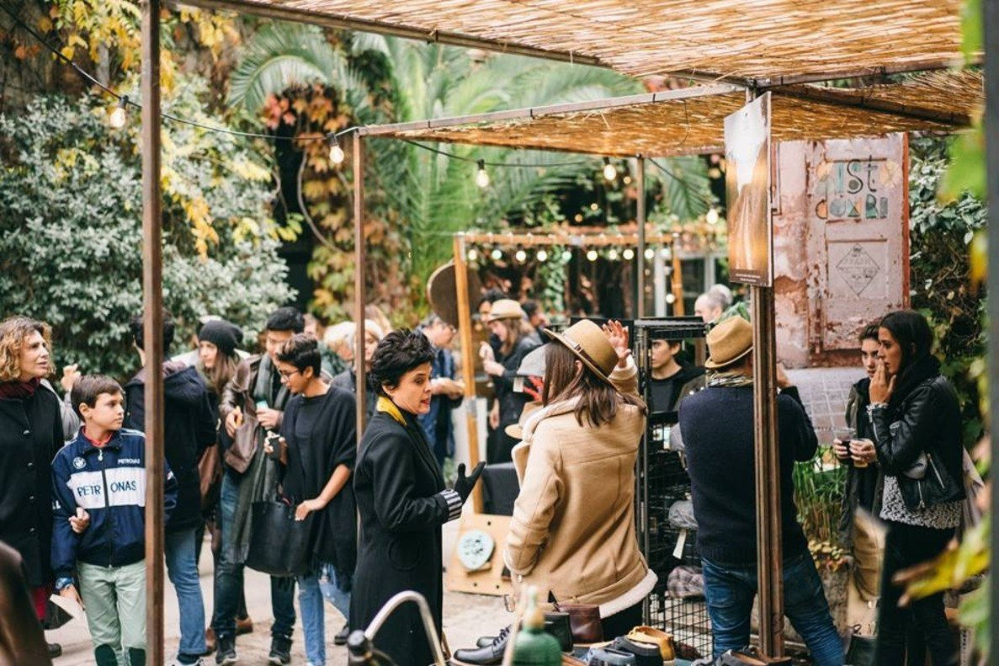
SPalo Alto Market, is a sophisticated street market in Barcelona, taking place on the first weekend of each month in an unique area of Poblenou. In the Palo Alto Market stalls you will find organic and street food, "street style" fashion, accessories, jewelry, "new design", "vintage", crafts, books, records ... Besides during the markt they organize workshops, concerts and art exhibitions.
Address:
Carrer dels Pellaires, 30, 38, 08019 Barcelona
Phone: +34 931 58 95 55
Hours: First Weekend of each Month.
Website:
palomarketfest.com